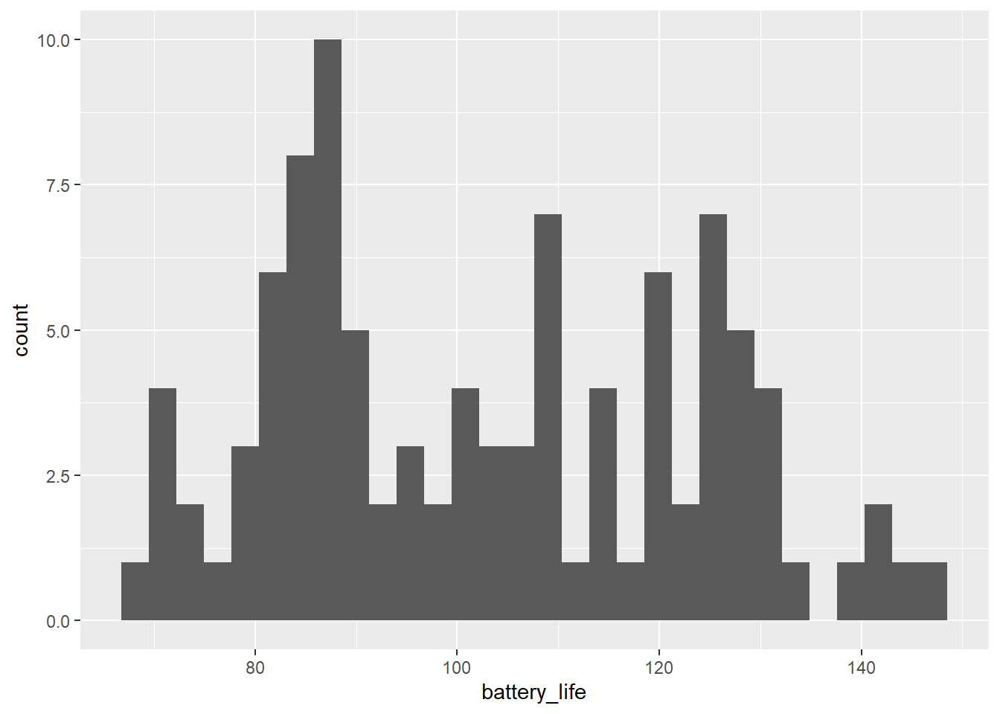
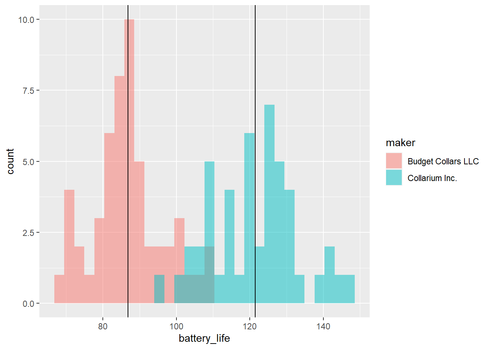
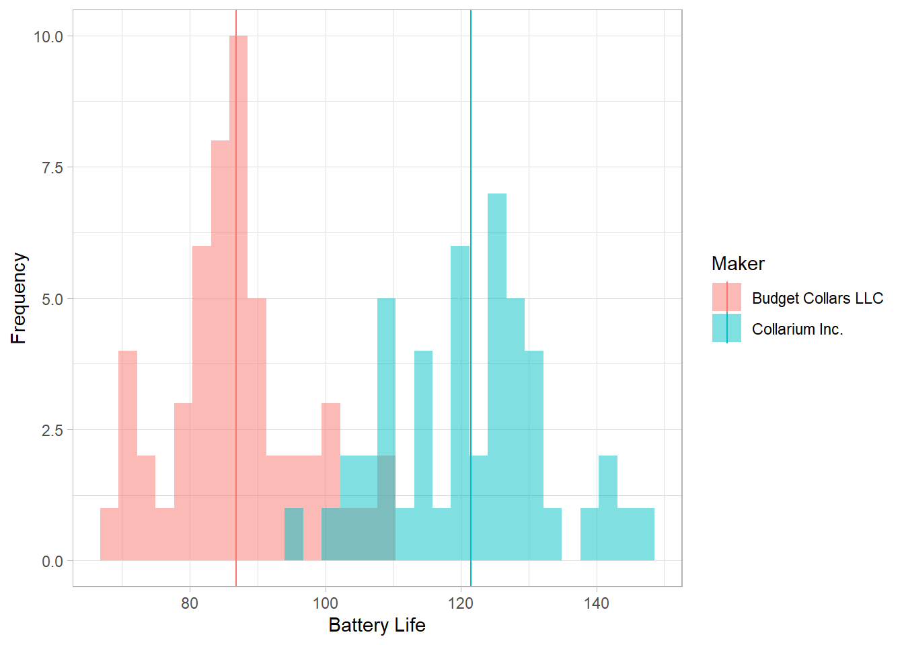
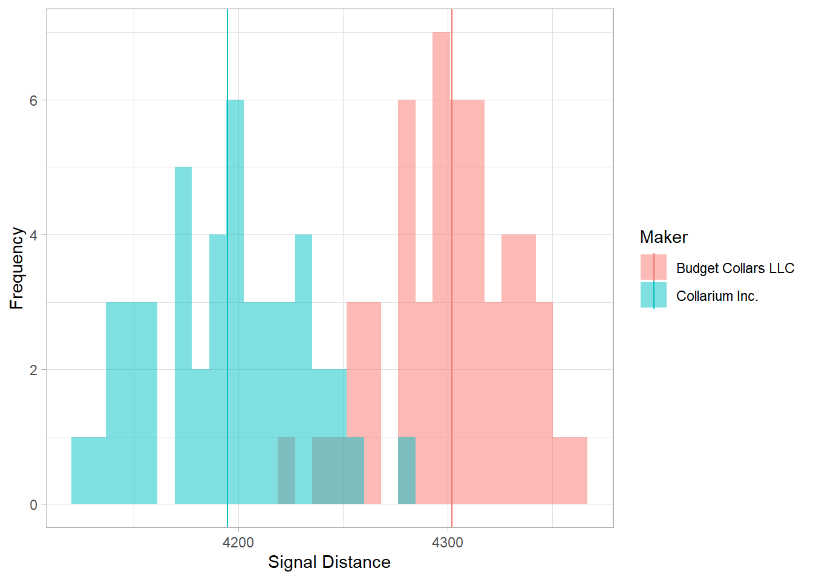

# Load library
library(tidyverse)
# Load data
collars <- read_csv("data/collar_data.csv")3.1: Leopard Seals
Introduction to the Problem
The Challenge
Given the issues with our farmed fish, we will need to supplement our diets with some fish that are wild-caught for a while. These fish are caught by members of Team Antarctica, but there is quite a bit of risk involved.
One of the main hazards to these fishing teams are leopard seals. They’re apex predators in this ecosystem and are quite large, averaging 2.4–3.5 m (7.9–11.5 ft) in length and 200-600 kilograms (440-1,320 lb) in weight. Due to their large size and predatory nature, they can cause serious injury, especially when large schools of fish are involved (a researcher was killed by a leopard seal in Antarctica in 2003).
One way we’re working to remove some of this danger is by working with data from large mammal researchers. They have been tracking leopard seals using radio collars, one of many ways to track wildlife.
They have radio collared on a number of seals that live in areas that could be fished. Fishing boats are equipped with radios that can detect the presence of seals in the area and avoid high-risk sites.
In recent months, a problem has arisen. Some of the collars are failing, leading to some very close calls! While attempting to untangle a net, one team member was pulled into the water when a seal lunged at some fish trapped in the net.
The large mammal team replaces collars frequently based on the two manufacturers’ recommendations for battery life and general wear and tear, but it seems as if some of the collars are dying earlier than expected and putting our team in danger.
We’ve been tasked with determining why the units are failing and if we can tie it to a particular manufacturer.
The Data
Our data on collars is in a file called “collar_data.csv.” Read in this data and our tidyverse.
Explore the Data
- Two manufacturers
- Battery life: the average number of days a particular collar lasts (this is recorded in the unit and stored when the battery dies)
- Signal distance: the maximum signal distance at which that particular collar has been recorded
- Fail: collars that have failed in the past (e.g. they’ve been recovered from seals that were noticed by the team but that didn’t ping the radio equipment).
Group Challenge 1: Summarizing
Let’s practice. Write some code to do the following:
- Calculate the mean and standard deviation for:
- battery life
- signal distance
- Do this for both manufacturers
bat_life_and_signal <- collars %>%
group_by(maker) %>% # Group by manufacturer
summarize(bat_life_mean = mean(battery_life), # Mean (battery)
bat_life_sd = sd(battery_life), # SD (battery)
signal_mean = mean(signal_distance), # Mean (signal)
signal_sd = min(signal_distance)) # SD (signal)
# View results
bat_life_and_signal# A tibble: 2 × 5
maker bat_life_mean bat_life_sd signal_mean signal_sd
<chr> <dbl> <dbl> <dbl> <dbl>
1 Budget Collars LLC 86.8 9.64 4302. 4222.
2 Collarium Inc. 121. 11.8 4195. 4127.We also might want to count up how many collar failures are attributed to each maker.
# Number of failed collars per maker
# Option 1: summarize + sum
collars %>%
group_by(maker) %>%
summarize(fail_count = sum(fail))# A tibble: 2 × 2
maker fail_count
<chr> <dbl>
1 Budget Collars LLC 16
2 Collarium Inc. 4# Option 2: count
collars %>%
group_by(maker) %>%
count(fail)# A tibble: 4 × 3
# Groups: maker [2]
maker fail n
<chr> <dbl> <int>
1 Budget Collars LLC 0 37
2 Budget Collars LLC 1 16
3 Collarium Inc. 0 43
4 Collarium Inc. 1 4Looks like one of these makers is definitely the one having some problems!
Visualizing the Data
After summarizing our data, our next step in our data exploration is usually data visualization. Let’s practice some plotting in ggplot2 to remind ourselves how this works!
One Continuous Variable at a Time
What types of plots can we use to explore one continuous variable (and one categorical variable — in this case, maker)?
- Multiple histogram
- Multiple density plot
- Box-and-whisker plot
We can start with a histogram of the battery life of the collars.
# Histogram
ggplot(collars, aes(battery_life)) +
geom_histogram()`stat_bin()` using `bins = 30`. Pick better value with `binwidth`.
We probably want to add in the collar maker to see some differences there.
# Histogram by maker
ggplot(collars, aes(battery_life, fill = maker)) +
geom_histogram(alpha = 0.5, position = "identity")`stat_bin()` using `bins = 30`. Pick better value with `binwidth`.
What if we want to add the mean value of each collar maker to the plot? How do we do that?
One of the neat things about ggplot2 is that you can actually reference different data frames within the same plot. We’ve already calculated the mean values for each collar maker and saved those values in a data frame called bat_life_and_signal. We can now reference that data frame and those values and add them to our plot.
We will use the geom_vline() function to add a vertical line onto our plot at the point in the x-axis that represents the mean value. In this function, we will specifically reference the bat_life_and_signal data frame.
Let’s take a look at the help file for geom_vline() to see what arguments it takes. Scroll down to the “Aesthetics” section.
# What is geom_vline?
? geom_vlineIt looks like we will need to specify the data and the x-intercept, the place on the x-axis that matches the mean value.
# Histogram by maker, with mean line
ggplot(collars, aes(battery_life, fill = maker)) +
geom_histogram(alpha = 0.5, position = "identity") +
geom_vline(data = bat_life_and_signal, aes(xintercept = bat_life_mean))`stat_bin()` using `bins = 30`. Pick better value with `binwidth`.
Nice! We have name the data argument in the geom_vline() function because otherwise the function assumes we still want to use the data from the ggplot() function and gets confused. We are essentially overwriting that data and telling geom_vline() that we need to use a different data frame.
Let’s wrap this up and make it extra nice by adding color, labels, and a theme.
# Histogram by maker, with mean line and labels
ggplot(collars, aes(battery_life, fill = maker)) +
geom_histogram(alpha = 0.5, position = "identity") +
geom_vline(data = bat_life_and_signal, aes(xintercept = bat_life_mean, color = maker)) +
labs(x = "Battery Life",
y = "Frequency",
color = "Maker",
fill = "Maker") +
theme_light()`stat_bin()` using `bins = 30`. Pick better value with `binwidth`.
Group Challenge!
Make the same plot that we made above expect for the signal distance.
# Same as above, but for signal distance
ggplot(collars, aes(signal_distance, fill = maker)) +
geom_histogram(alpha = 0.5, position = "identity") +
geom_vline(data = bat_life_and_signal, aes(xintercept = signal_mean, color = maker)) +
labs(x = "Signal Distance",
y = "Frequency",
color = "Maker",
fill = "Maker") +
theme_light()`stat_bin()` using `bins = 30`. Pick better value with `binwidth`.
Two Continuous Variables at a Time
We’ve explored both battery life and signal distance individually. Now let’s bring them together into one plot to see what the relationship between them is like. What type of plot will be use for that?
# Scatterplot
ggplot(collars, aes(x = signal_distance, y = battery_life, color = maker)) +
geom_point()
How do we interpret this plot? What is it telling us about the relationship between signal distance and battery life? What is it telling us about that relationship between the two collar makers?
As it turns out, this trade-off between signal distance and battery length is very real when it comes to wildlife tracking! Why do you think that is?